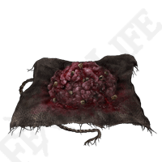

Fireproof Dried Liver
Pickled Turtle Neck
Exalted Flesh
Raw Meat Dumpling
Pickled Fowl Foot
Sweet Raisin
Boiled Crab
Boiled Prawn
Never met someone with a taste for prawns I couldn't trust.
- Big Boggart

Never met someone with a taste for prawns I couldn't trust.
- Big Boggart